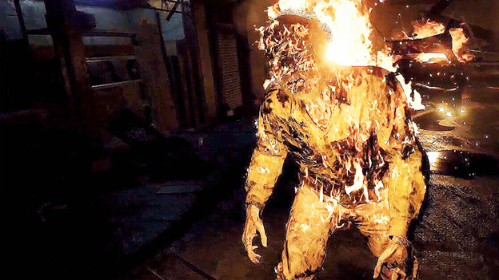

Capcom shocks fans in attendance at Sony’s E3 2016 press conference by announcing Resident Evil 7, giving the game a release date, and confirming PS VR functionality.
It’s been four years since Resident Evil 6 launched to mixed reviews, and since then, fans have been clamoring for Capcom to return the franchise to its survival-horror roots. Well, at E3 2016, Capcom finally gave fans what they’ve been asking for: Resident Evil VII is confirmed, and it looks like it is pure survival horror.
Resident Evil VII was confirmed to thundering applause at Sony’s E3 2016 press conference. The game, born from the creepy “Kitchen” VR demo that Capcom has been showing off these past couple of years, looks to be one of the scariest virtual reality experiences we’ve seen to date, and will be available on January 24th, 2017.
Despite the first-person perspective and optional use of thePlayStation VR headset, Resident Evil VII looks like a genuine horror game, and appears to be bringing back the franchise’s focus on exploration and puzzle solving. For example, inResident Evil VII, players are free to explore the disturbing, cockroach-infested mansion they’re imprisoned in and collect items to help them progress, not unlike the olderResident Evil games.
As for combat, it’s unclear if Resident Evil VII will even allow players to fight the horrors they encounter in the game, or if the only option for survival will be to flee. In the trailer, we only catch a brief glimpse of a possible enemy in the game, but if his size is any indication, it seems as though he would make quick work of the player character without a weapon, and there are no weapons to be seen in the trailer.
Rumors of Resident Evil VII have persisted for years, and thanks to Sony’s E3 2016 press conference, fans now know exactly when they can get their hands on the long-awaited game. It remains to be seen if Resident Evil enthusiasts will embrace the first-person viewpoint of the game or not, but it’s refreshing to see Capcom take such a risk with one of its most popular franchises.
Resident Evil VII will be available on January 24th, 2017 for PC, PlayStation 4, PlayStation VR, and Xbox One.